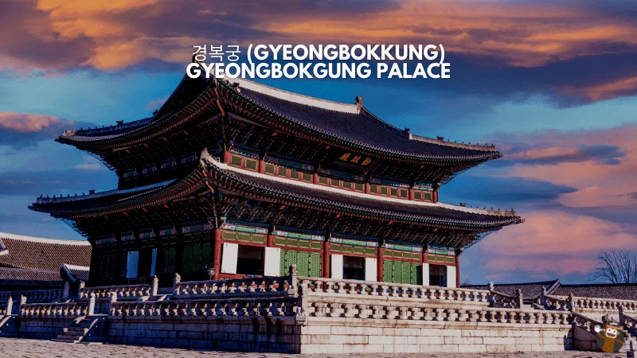
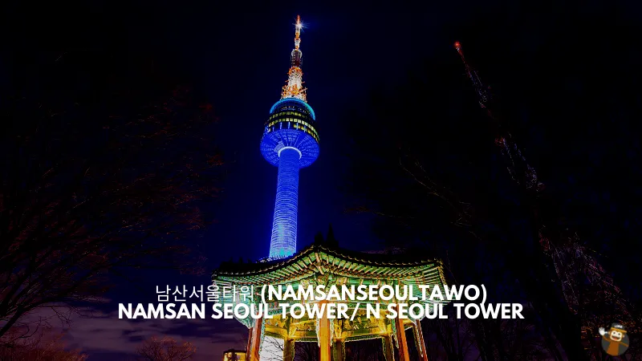
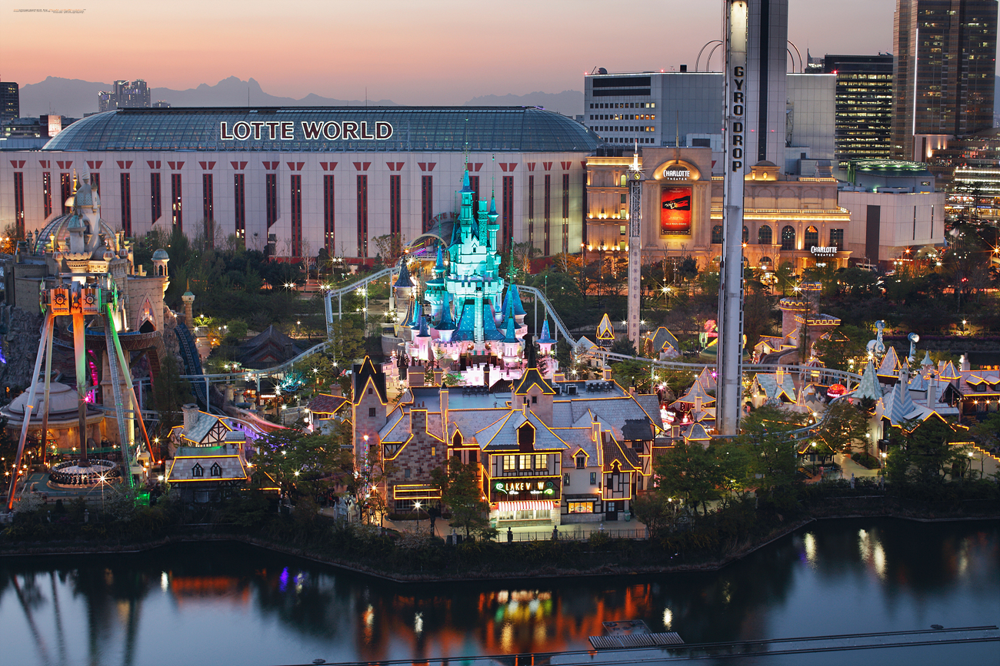
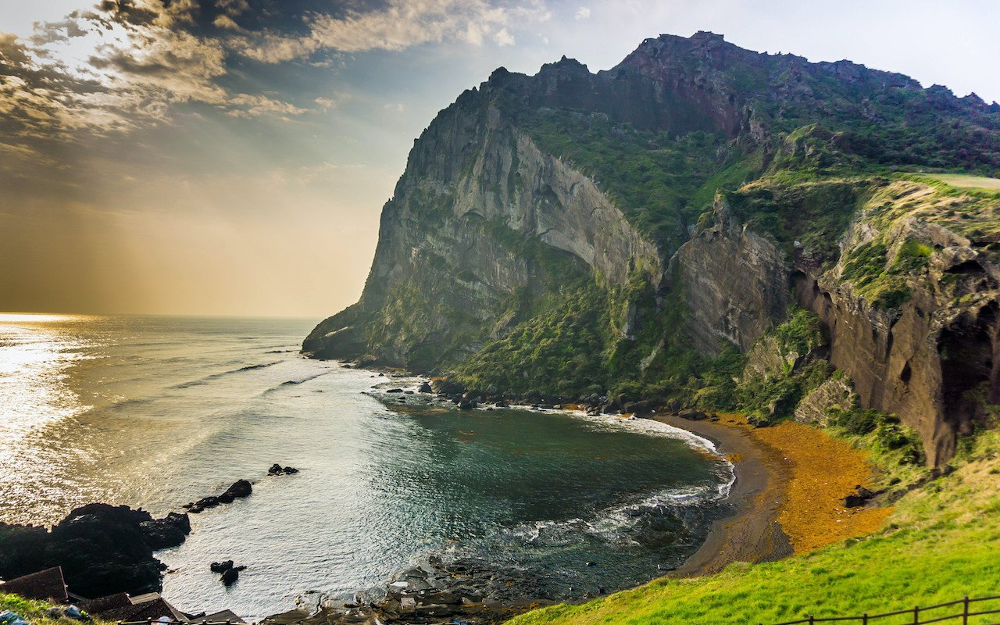
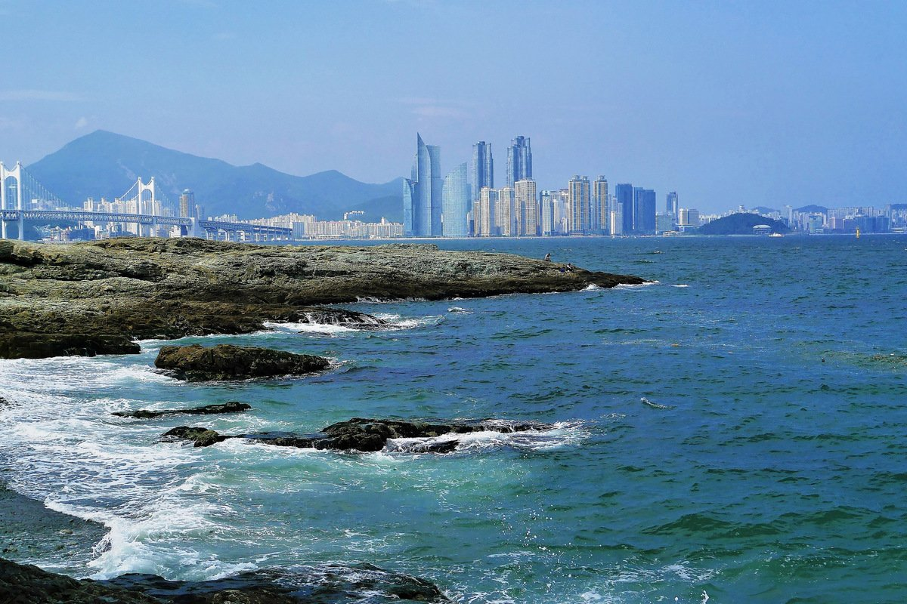

Visit most interesting places in Korea.
Gyeongbokgung Palace
It is the place where the royal family lived, and in fact, it was always the preferred residence of the royal. This palace was built during the early times of the Joseon dynasty.This palace built in 1395 during the Joseon dynasty has gone through an incredible state of great disturbance. It was destroyed, bombed, occupied by the Japanese, rebuilt many times, but it is still standing strong after being restored. If only the walls of pillars of this palace could talk, they would share a lot about Korean history.
Namsan Seoul Tower
Namsan Seoul Tower is indeed one of the must-visit tourist attractions in South Korea. You can never leave this country without visiting this 500-meter above sea level tower. With this height, you can completely see the city below. It’s near Mount Namsan, which will give you a great view. When you’re on top of the tower, you can enjoy the indoor and outdoor viewing decks, restaurants, a cable car, and more. This tower also illuminates when the night strikes, especially during seasonal light shows.
Lotte World
This amusement park can be found in the middle of downtown Seoul and is based on the Lotte World Tower, the tallest building in South Korea. The Lotte World Tower also offers a great view from its multiple observation areas. Visitors can also shop, dine, and have a great experience in a luxury hotel.This theme park is perfect for having fun times with your family, friends, and partners. Both adults and children can enjoy this because a hotel folk museum features traditional performances, movie theaters, and more.
Jeju Island
Jeju Island is one of the most sought-after travel destinations in South Korea because of its incredible beauty. It is the home of Hallasan, a shield volcano, and is considered the highest mountain in South Korea. Jeju Island is interesting for tourists is the volcanic mountains and lava tubes. It is called “Korea’s Hawaii.” This island is also known as the “Island of the Gods.” This appellation came from the legend that demi-gods once lived on this island.
Busan
Busan is the 2nd largest city in South Korea, and it’s known for many different reasons. It is a large port city. It is also known for its mountains, temples, and beaches. It is a gem of South Korea.One of the most notable tourist attractions in South Korea located in Busan is the Gamcheon Cultural Village. This village has a really interesting story because it used to be a slum or a home of the refugees from the Korean war. But, after different government agencies redeveloped it, it became a tourist attraction. From then, it became the artistic hub where artists could go there and freely express themselves in any form of art. The houses are so colorful, and you can feel the arts all around you.